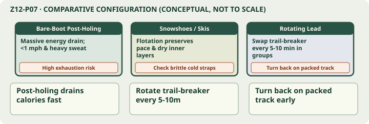

Z12-P07 · Extreme environments · New manuscript
Manage snowshoe, ski and post-holing fatigue in deep winter snowpack
Conserve calories, prevent sweat soak and preserve return margins when breaking trail in deep winter snow.
When it applies · Deep snow travel on trails, meadows and northern forests using boots, snowshoes or backcountry skis.
Equipment · Matched snowshoes/skis with inspected bindings, trekking poles with snow baskets, extra calories and water.

Actions
- Recognize that wading knee-deep without flotation ("post-holing") burns massive energy, spikes sweating and can cut travel speed below one mile per hour—carry snowshoes or skis whenever snow depth warrants.[E10, E01, E25]
- Rotate the lead trail-breaker frequently every 5–10 minutes in groups so no single hiker exhausts calories or drenches inner layers while others chill standing still.[E11, E10, ED]
- Check snowshoe bindings, straps and ski pole baskets regularly in subzero cold where plastic straps grow brittle and snap suddenly.[K07, E02, ED]
Failure recognition · Pushing a tired single trail-breaker two miles through waist-deep drifts until they overheat, collapse and leave the group short of daylight.[E10, E11, E01]
Verify · Confirm rotating lead schedule, manageable dry-sweat pace, intact bindings and generous daylight turnaround margin.[E11, E10, ED]
Stop or change course · Deep exhausting snowpack that outpaces daylight or causes heavy sweating and stumbling triggers immediate turnaround onto your already-packed return track.[E01, E10, E11]
Evidence and editorial notes
- E01 · Minnesota DNR · Safety in State Forests (current web edition)
- Section: Before your trip and while visiting · Conditions: State-forest travel and backcountry planning
Support: Know the route, check conditions, carry navigation and safety equipment and share trip details.
Limitations: Conditions and trail maintenance vary seasonally across forest units. · Conflicting evidence: None; aligns with NPS-H.
Editorial note: Foundation for trip planning and pre-departure risk checks. · Specialist reviewer: Land management and search and rescue
Primary source · checked 2026-11-24 - E02 · NPS · Ten Essentials (current web edition)
- Section: Navigation; insulation; emergency shelter; emergency food and water · Conditions: Outdoor trips; adjust kit to season and route
Support: Carry essential systems including navigation, insulation, light, water and emergency shelter.
Limitations: Carrying items without practice or cold-weather verification does not ensure readiness. · Conflicting evidence: None; baseline kit system architecture.
Editorial note: Supports failure-mode packing and kit verification cards. · Specialist reviewer: Field education and search and rescue
Primary source · checked 2026-11-24 - E10 · NWS · What To Do If You're Caught in a Winter Storm (current web edition)
- Section: Outside > Protect yourself from frostbite and hypothermia · Conditions: Outdoor winter storm
Support: Keep clothing dry and avoid overexertion. Wetness accelerates cooling.
Limitations: Cotton retains moisture and accelerates conductive and evaporative heat loss. · Conflicting evidence: None; reinforces moisture-management layering.
Editorial note: Links sweat management to overnight insulation integrity. · Specialist reviewer: Cold-weather shelter and wilderness medicine
Primary source · checked 2026-11-24 - E11 · NPS · Hike Smart (current web edition)
- Section: Plan your hike; Stay together · Conditions: Groups on hiking routes
Support: Choose a route suited to the group's abilities and hike at a pace that keeps the group together.
Limitations: Fast hikers moving ahead at junctions is a leading driver of preventable separation. · Conflicting evidence: None; aligns with SAR prevention principles.
Editorial note: Core reference for group accountability and pacing cards. · Specialist reviewer: Group leaders and search and rescue
Primary source · checked 2026-11-24 - E25 · FEMA / Ready.gov · Winter Weather (current web edition)
- Section: Winter Weather > Stay Safe During Winter Storms · Conditions: Extreme cold, drifting snow, and power or travel disruption
Support: Prepare layered clothing, emergency shelter/heat alternatives, and vehicle winter kits; stay indoors during blizzards, protect against frostbite/hypothermia, and keep exhaust vents and exits clear of drifting snow.
Limitations: Drifting snow can block tent vents, doors, and vehicle tailpipes silently overnight. · Conflicting evidence: None; reinforces overnight exit/vent clearance checks.
Editorial note: Supports snow-drift exit maintenance and winter shelter failure recognition. · Specialist reviewer: Cold-weather shelter and emergency management
Primary source · checked 2026-11-24 - K07 · NPS · Ten Essentials (current web edition)
- Section: Repair Kit and Tools · Conditions: Field equipment repair during backcountry travel
Support: Carry a route-appropriate repair kit (duct/gear tape, multi-tool, cordage, patch supplies) matched to shelter, pack, stove and water gear; verify compatibility before departure.
Limitations: Field patches restore temporary function and do not restore full original storm or load ratings. · Conflicting evidence: None; aligns with E02 and E20.
Editorial note: Grounds field-repair kits, temporary patches and equipment failure limits. · Specialist reviewer: Field equipment safety
Primary source · checked 2026-11-24
Source lineage · NWS winter safety and NPS winter travel; new manuscript · Classification · New manuscript.